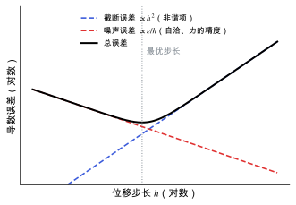

有限差分与微扰方法
两种算能量二阶导数的方法在什么条件下应给出相同结果，各自的数值误差从哪里来。
直观阅读需要
- 数值微分（差商）
- 从能量到结构与响应 里“响应是二阶导数”
只是提示，不需要先读完才能往下看。
直觉直观解释
介电、玻恩电荷、力常数、弹性、压电，都是能量的二阶导数（见 从能量到结构与响应）。求二阶导数有两条路：
- 有限差分 (finite differences)：真的把原子挪一点、把晶胞拉一点，重新做自洽计算，用一阶导数（力、应力、极化）的差商近似二阶导数。简单、通用，但引入步长这个额外参数。
- 密度泛函微扰理论 (density functional perturbation theory, DFPT)：在未扰动的基态上，直接解波函数对扰动的一阶响应方程，解析地得到二阶导数。没有步长，但要求程序为每种扰动和每种泛函都实现响应方程 [Baroni 2001]。
两者在数学上求的是同一个量。只要计算设置相同，并且各自的数值误差都控制住，结果应当一致。这一点可以用来交叉检查。

| 符号 | 是什么 | 图里对应 |
|---|---|---|
| h | 有限差分的位移或应变步长 | 横轴（对数） |
| 截断误差 | 泰勒展开中被忽略的高阶项，中心差分时 \propto h^{2} | 蓝色虚线 |
| \epsilon | 一阶导数（力、应力、极化）本身的数值噪声，来自自洽收敛精度等 | 红色虚线 |
| 总误差 | 两者之和 | 黑色实线 |
| 最优步长 | 两项相当的位置 | 灰色竖线 |
这张图是示意，最优步长的具体数值依赖体系和设置，需要测试。
定义与公式数学与推导
有限差分
以力常数为例，原子坐标 u_n 移动 \pm h，读出原子 m 上的力：
其中 F_m 是坐标 m 方向的力；h 是步长。中心差分的误差有两部分：
其中 \delta K_{mn} 是差分结果的误差；第一项是截断误差，来自泰勒展开的三阶项，反映势能面的非谐程度；第二项是噪声误差，\epsilon 是力的数值误差（自洽不够紧、积分网格等）。弹性常数（对应变差分应力）和压电系数（对应变差分极化）的形式相同。
微扰方法
把扰动参数记为 \lambda（原子位移、应变或电场）。一阶波函数响应 |\partial_\lambda \psi_n\rangle 满足 Sternheimer 方程：
其中 H 是 Kohn–Sham 哈密顿量；\varepsilon_n 是占据态能量；P_c 是投影到非占据态空间的算符；\partial_\lambda V_{\mathrm{SCF}} 是自洽势的一阶变化，它依赖响应后的电子密度，所以这个方程也要自洽求解 [Baroni 2001]。有了一阶响应，二阶导数（例如 \partial^{2}E/\partial\lambda_1\partial\lambda_2）可以解析写出 [Gonze & Lee 1997]。
在本研究线里的样子对应与边界
- VASP 的开关：
IBRION = 5/6是有限差分（6 利用对称性，配合ISIF ≥ 3还做应变），IBRION = 7/8是微扰方法（8 利用对称性）；LEPSILON = .TRUE.用微扰方法处理电场扰动 [VASP Wiki: IBRION]。 - 压电的两条路线： 1. 微扰路线：
LEPSILON给出 \bar e 和 Z^{*}，力常数和内应变再用IBRION得到，组合成弛豫离子 e（见 压电张量）。 2. 有限差分路线：在若干个小应变下各自优化原子位置，用 Berry 相（LCALCPOL）算极化，对应变差分。 - 交叉检查：同一套设置下，用两条路线各算一次某个关键分量（例如 d_{16} 相关的 e 分量）。两者差别大时，先查步长、自洽精度和分支问题，再怀疑物理。
- 色散校正：D3 这类校正只依赖原子坐标，给能量、力、应力加上一项。它会进入力常数和弹性常数；在微扰路线里，它是否被加进力常数，需要确认（见上面的待核验与 色散校正）。
常见坑对应与边界
- 步长太小：自洽不够紧（
EDIFF太大）时，噪声项 \epsilon/h 主导，力常数出现虚频或乱跳。 - 步长太大：软的分子转动和氢键模式非谐性强，截断项主导。
- 有限差分时原子弛豫不充分：应变后的结构若没有优化到足够小的力，残余力会混入内应变项。
- 两条路线设置不同：截断能、k 点、泛函（含色散校正）不一致时，比较两者没有意义。
检验自己对应与边界
参考资料
论文Baroni 2001
尚未实际查阅，目前只是拟查阅书目
论文Gonze & Lee 1997
尚未实际查阅，目前只是拟查阅书目
论文Wu, Vanderbilt & Hamann 2005
尚未实际查阅，目前只是拟查阅书目
官方文档VASP Wiki: LEPSILON
VASP Wiki, LEPSILON（线性响应计算介电与压电张量）
尚未实际查阅，目前只是拟查阅书目
官方文档VASP Wiki: IBRION
VASP Wiki, IBRION（结构优化、有限差分与 DFPT 的选择）
尚未实际查阅，目前只是拟查阅书目
分类响应与张量性质 · 对照 · 研究线：压电与响应计算 · 状态：草稿